9.3 Boosting
Consider producing a sequence of learners: \[F_T(x) = \sum_{t=1}^{T} f_t(x)\]
How to train each \(f_t(x)\)? At the \(t\)-th iteration, given previously estimated \(f_1, \ldots, f_{t-1}\), we estimate a new function \(h(x)\) to minimize the loss: \[\min_h \sum_{i=1}^{n} L \Biggl(y_i, \,\, \sum_{k=1}^{t-1} f_k(x_i) + h(x_i) \Biggr)\] When boosting, instead of using the entire \(h(x)\), we only use a small fraction of it, and add \(\alpha_t h(x)\) to the current model. Then, proceed to the next iteration.
Boosting is an additive model, but its different from generalized additive model, in which each weak learner only involves one variable. In boosting, each \(f_t(x)\) can be very flexible, and we may fit a large number of functions. Boosting is also different from random forests, another additive model. In random forests, each tree is generated independently, so they cannot borrow information from each other.
9.3.1 AdaBoost
AdaBoost is a boosting algorithm due to Freund and Schapire (1997) and is a special case of the above framework with Exponential loss for classification. For this setting, we use labels \(y_i\in\{-1, 1\}\).
AdaBoost Algorithm
Initiate weights \(w_i^{(1)} = 1/n,\, i=1,2, \ldots, n\).
For \(t=1:T\), repeat (a)–(d)
Fit a classifier \(f_t(x) \in \{-1, 1\}\) to the training data, with individual weights \(w_i^{(t)}\)
Compute the training error at \(t\) \[\varepsilon_t = \sum_i w_i^{(t)} \mathbf{1}_{\{y_i \neq f_t(x_i)\}}\]
Compute \[\alpha_t = \frac{1}{2} \log \frac{1-\varepsilon_t}{\varepsilon_t}\]
Update weights \[w_i^{(t+1)} = \frac{w_i^{(t)}}{Z_t} \exp \Bigl\{ -\alpha_t y_i f_t(x_i) \Bigr\}\] where \(Z_t\) is a normalization factor to keep \(w_i^{(t+1)}\) a distribution: \[Z_t = \sum_{i=1}^{n} w_i^{(t)} exp\Bigl\{-\alpha_t y_i f_t(x_i) \Bigr\}\]
- Output the final model \[F_T(x) = \sum_{t=1}^{T} \alpha_t f_t(x)\] The classification rule is \(sign(F_T(x))\).
In the following example, we build a tree model \(f_t(x)\) with just one split at each iteration. The final model is stacked with all tree models.
x1 = seq(0.1, 1, 0.1)
x2 = c(0.5, 0.3, 0.1, 0.6, 0.7, 0.8, 0.5, 0.7, 0.8, 0.2)
y = c(1, 1, -1, -1, 1, 1, -1, 1, -1, -1)
X = cbind(x1 = x1, x2 = x2)
xgrid = expand.grid(x1 = seq(0, 1.1, 0.01), x2 = seq(0, 0.9,
0.01))
plot(X[, 1], X[, 2], col = ifelse(y > 0, "darkblue", "orange"),
pch = ifelse(y > 0, 4, 1), xlim = c(0, 1.1), lwd = 3, ylim = c(0,
0.9), cex = 3)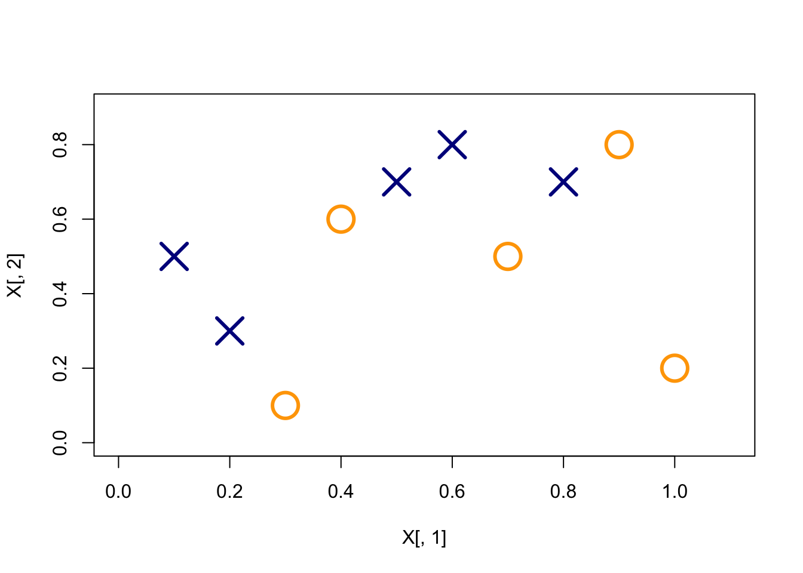
# fit gbm with 3 trees
library(gbm)
gbm.fit = gbm(y ~ ., data.frame(x1, x2, y = as.numeric(y == 1)),
distribution = "adaboost", interaction.depth = 1, n.minobsinnode = 1,
n.trees = 3, shrinkage = 1, bag.fraction = 1)
pretty.gbm.tree(gbm.fit, i.tree = 1)## SplitVar SplitCodePred LeftNode RightNode MissingNode ErrorReduction Weight Prediction
## 0 0 0.25 1 2 3 2.5 10 0.00
## 1 -1 1.00 -1 -1 -1 0.0 2 1.00
## 2 -1 -0.25 -1 -1 -1 0.0 8 -0.25
## 3 -1 0.00 -1 -1 -1 0.0 10 0.00plot(X[, 1], X[, 2], col = ifelse(y > 0, "darkblue", "orange"),
pch = ifelse(y > 0, 4, 1), xlim = c(0, 1.1), lwd = 3, ylim = c(0,
0.9), cex = 3)
pred = predict(gbm.fit, xgrid)
points(xgrid, col = ifelse(pred > 0, "darkblue", "orange"), cex = 0.2)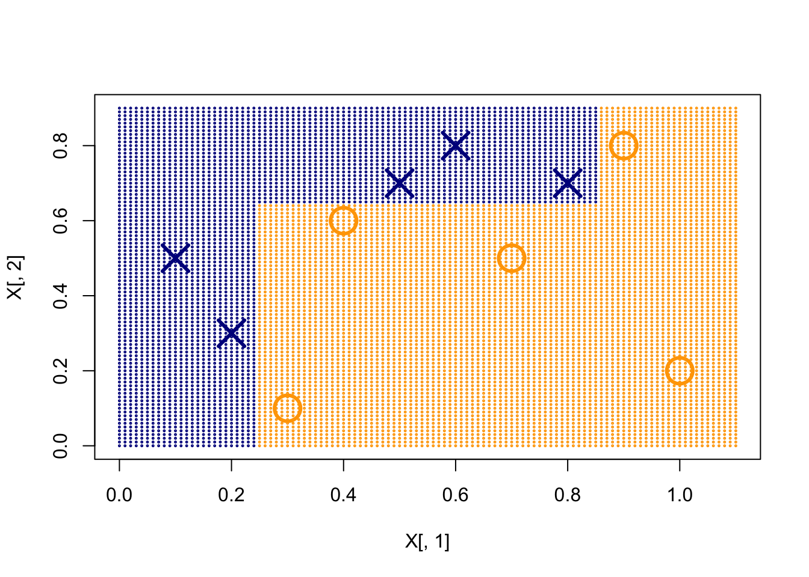
w1 = rep(1/10, 10)
f1 <- function(x) ifelse(x[, 1] < 0.25, 1, -1)
e1 = sum(w1 * (f1(X) != y))
a1 = 0.5 * log((1 - e1)/e1)
w2 = w1 * exp(-a1 * y * f1(X))
w2 = w2/sum(w2)
# the first tree
plot(X[, 1], X[, 2], col = ifelse(y > 0, "darkblue", "orange"),
pch = ifelse(y > 0, 4, 1), xlim = c(0, 1.1), lwd = 3, ylim = c(0,
0.9), cex = 3)
pred = f1(xgrid)
points(xgrid, col = ifelse(pred > 0, "darkblue", "orange"), cex = 0.2)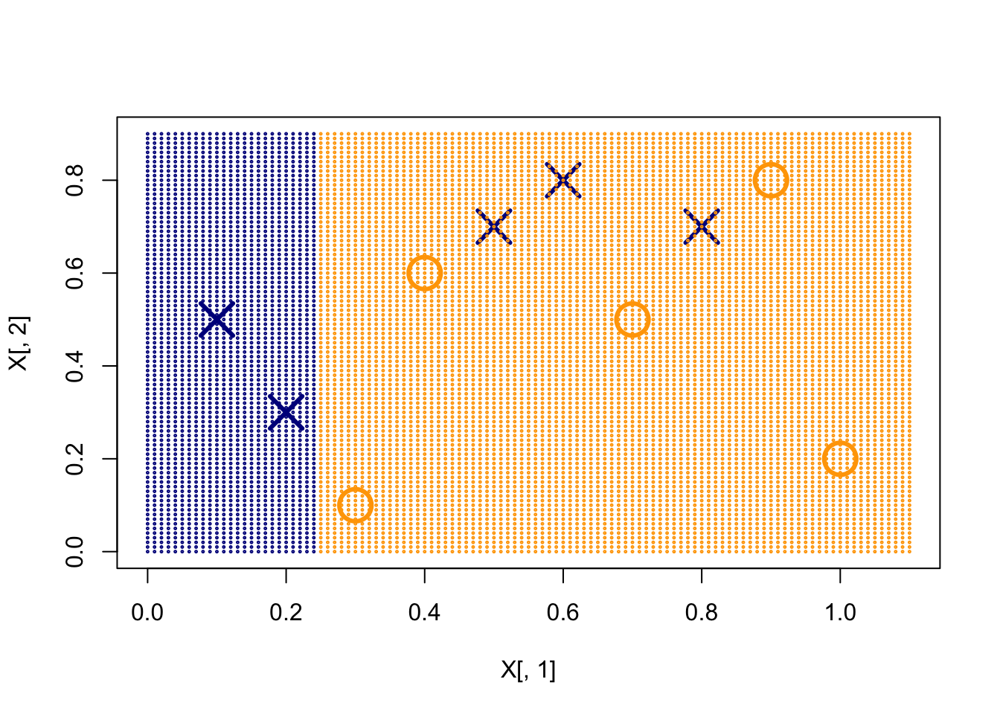
# weights after the first tree
plot(X[, 1], X[, 2], col = ifelse(y > 0, "darkblue", "orange"),
pch = ifelse(y > 0, 4, 1), xlim = c(0, 1.1), lwd = 3, ylim = c(0,
0.9), cex = 30 * w2)
f2 <- function(x) ifelse(x[, 2] > 0.65, 1, -1)
e2 = sum(w2 * (f2(X) != y))
a2 = 0.5 * log((1 - e2)/e2)
w3 = w2 * exp(-a2 * y * f2(X))
w3 = w3/sum(w3)
# the second tree
plot(X[, 1], X[, 2], col = ifelse(y > 0, "darkblue", "orange"),
pch = ifelse(y > 0, 4, 1), xlim = c(0, 1.1), lwd = 3, ylim = c(0,
0.9), cex = 30 * w2)
pred = f2(xgrid)
points(xgrid, col = ifelse(pred > 0, "darkblue", "orange"), cex = 0.2)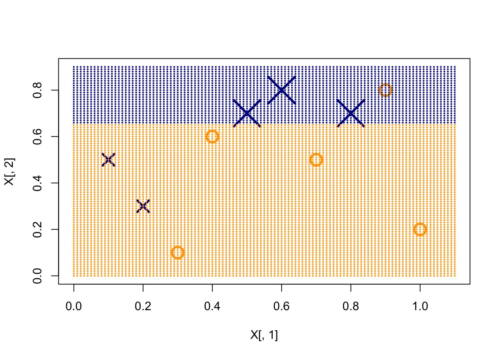
# weights after the second tree
plot(X[, 1], X[, 2], col = ifelse(y > 0, "darkblue", "orange"),
pch = ifelse(y > 0, 4, 1), xlim = c(0, 1.1), lwd = 3, ylim = c(0,
0.9), cex = 30 * w3)
f3 <- function(x) ifelse(x[, 1] < 0.85, 1, -1)
e3 = sum(w3 * (f3(X) != y))
a3 = 0.5 * log((1 - e3)/e3)
# the third tree
plot(X[, 1], X[, 2], col = ifelse(y > 0, "darkblue", "orange"),
pch = ifelse(y > 0, 4, 1), xlim = c(0, 1.1), lwd = 3, ylim = c(0,
0.9), cex = 30 * w3)
pred = f3(xgrid)
points(xgrid, col = ifelse(pred > 0, "darkblue", "orange"), cex = 0.2)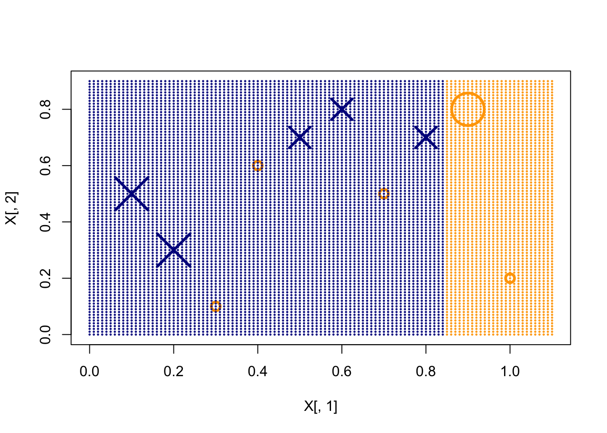
# the final decision rule
plot(X[, 1], X[, 2], col = ifelse(y > 0, "darkblue", "orange"),
pch = ifelse(y > 0, 4, 1), xlim = c(0, 1.1), lwd = 3, ylim = c(0,
0.9), cex = 3)
pred = a1 * f1(xgrid) + a2 * f2(xgrid) + a3 * f3(xgrid)
points(xgrid, col = ifelse(pred > 0, "darkblue", "orange"), cex = 0.2)
abline(v = 0.25) # f1
abline(h = 0.65) # f2
abline(v = 0.85) # f3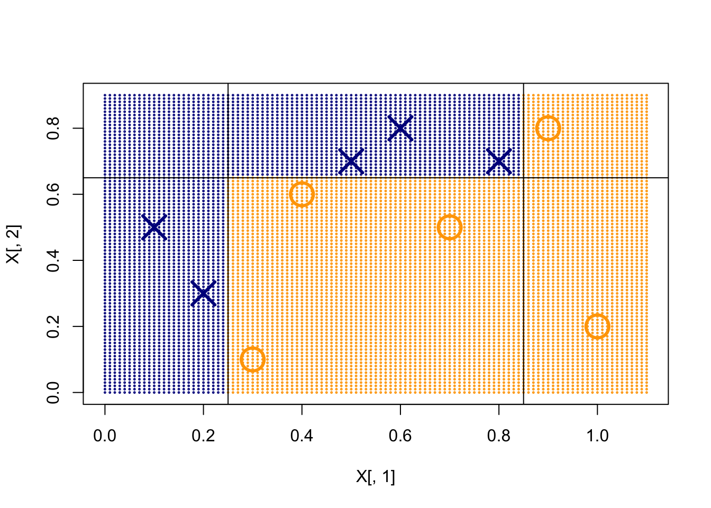
Although we can get really low training classification error, this is subject to overfitting. The following code demonstrates what overfitting looks like.
# One-dimensional classification example
n = 1000
set.seed(1)
x = cbind(seq(0, 1, length.out = n), runif(n))
py = (sin(4 * pi * x[, 1]) + 1)/2
y = rbinom(n, 1, py)
plot(x[, 1], y + runif(n, -0.05, 0.05), pch = 16, ylim = c(-0.05,
1.05), cex = 0.5, col = ifelse(y == 1, "orange", "darkblue"),
xlab = "x", ylab = "P(Y=1 | X=x)")
points(x[, 1], py, type = "l", lwd = 3)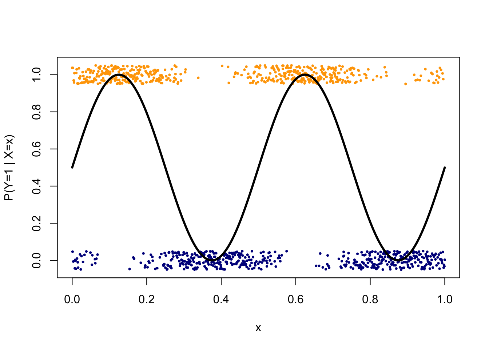
# fit AdaBoost with bootstrapping, I am using a large
# shrinkage factor
gbm.fit = gbm(y ~ ., data.frame(x, y), distribution = "adaboost",
n.minobsinnode = 2, n.trees = 200, shrinkage = 1, bag.fraction = 0.8,
cv.folds = 10)par(mfrow = c(3, 3))
# plot the decision function (Fx, not sign(Fx))
size = c(1, 5, 10, 20, 50, 100)
for (i in 1:6) {
par(mar = c(2, 2, 3, 1))
plot(x[, 1], py, type = "l", lwd = 3, ylab = "P(Y=1 | X=x)",
col = "gray")
points(x[, 1], y + runif(n, -0.05, 0.05), pch = 16, cex = 0.5,
ylim = c(-0.05, 1.05), col = ifelse(y == 1, "orange",
"darkblue"))
Fx = predict(gbm.fit, n.trees = size[i]) # this returns the fitted function, but not class
lines(x[, 1], 1/(1 + exp(-2 * Fx)), lwd = 1)
title(paste("# of Iterations = ", size[i]))
}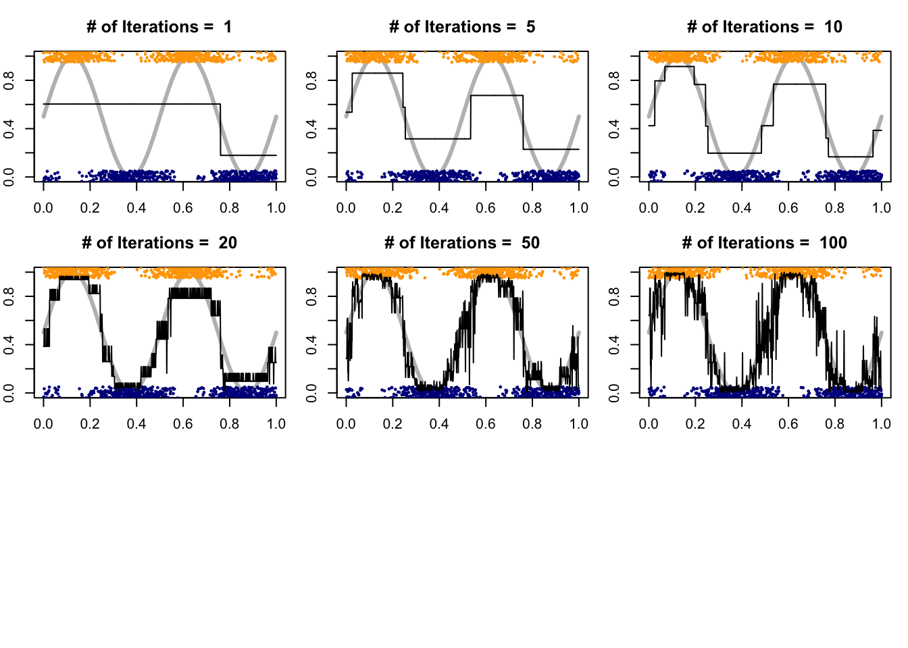
We can see that with a small number of iterations, the model is underfitting, while with a large number of iterations, the model is overfitting. Hence, selecting trees is necessary. For this purpose, we can use either the out-of-bag error to estimate the exponential upper bound, or simply do cross-validation.
# get the best number of trees from cross-validation (or
# oob if no cv is used)
gbm.perf(gbm.fit, method = "cv")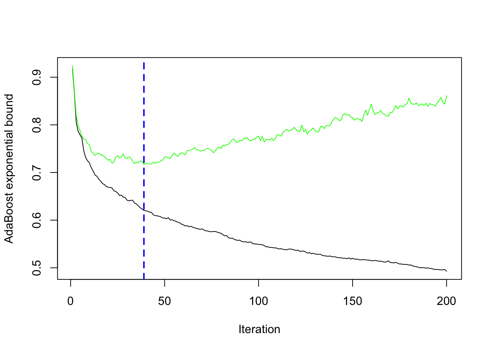
## [1] 39At the first iteration, the tree splits at 0.25 for \(X_1\).This makes the three positive cases on the right hand side to increase their weights. At the second iteration, the tree splits at 0.65 for \(X_2\). This further adjusts the weights, along with calculating \(\alpha_t\) at each step. At the third iteration, the tree splits at 0.85 for \(X_1\). This produces the final model: \[F_3(x) = 0.4236 f_1(x) + 0.6496 f_2(x) + 0.9229 f_3(x)\]
Intuitively, what happens in the AdaBoost algorithm is the following: at the initial step, all subjects are treated with equal weights. We learn a classifier \(f_t(x)\) and inspect which subjects got mis-classified. We then put more weights on the mis-classified subjects for the next iteration. We add \(\alpha_t f_t(x)\) to the existing model and train the next iteration using the updated weights.
9.3.2 Training Error Bound
There is an interesting property about the boosting algorithm that if we can always find a classifier that performs better than random guessing at each iteration, then the training error will eventually converge to zero. This works by analyzing the weight after the last iteration:
\[w_i^{(T+1)} = \frac{1}{Z_T} w_i^{(T)} \exp \Bigl\{ -\alpha_t y_i f_T(x_i) \Bigr\} \]
Note that for \(w_i^{(T)}\), we can also further backtrack it into \(T-1\): \[w_i^{(T)} = \frac{1}{Z_{T-1}} w_i^{(T-1)} \exp \Bigl\{ -\alpha_t y_i f_{T-1}(x_i) \Bigl\} \]
Hence, we can track this all the way back to the first iteration. This gives \[\begin{align*} w_i^{(T+1)} &= \frac{1}{Z_1 \cdot \cdot \cdot Z_T} w_i^{(1)} \prod_{t=1}^{T} \exp \Bigl\{ -\alpha_t y_i f_t(x_i) \Bigr\}\\ &= \frac{1}{Z_1 \cdot \cdot \cdot Z_T} \frac{1}{n} \prod_{t=1}^{T} \exp \Bigl\{ -\alpha_t y_i f_t(x_i) \Bigr\} \\ &= \frac{1}{Z_1 \cdot \cdot \cdot Z_T} \frac{1}{n} \exp \Bigl\{ - y_i \sum_{t=1}^{T} \alpha_t f_t(x_i) \Bigr\}\\ \end{align*}\] Note that \(\sum_{t=1}^{T} \alpha_t f_t(x_i)\) is the just the final model at the \(T\)th iteration, i.e., \(F_T(x_i)\). Since the weights sum up to 1, we can write \[1 = \sum_{i=1}^{n} w_i^{(T+1)} = \frac{1}{Z_1 \cdot \cdot \cdot Z_T} \frac{1}{n} \sum_{t=1}^{T} \exp \Bigl\{ - y_i F_T(x_i) \Bigr\}\] or equivalently \[Z_1 \cdot \cdot \cdot Z_T = \frac{1}{n} \sum_{t=1}^{T} \exp \Bigl\{ - y_i F_T(x_i) \Bigr\} \] On the right-hand side, we have the exponential loss. Let’s check some facts:
Correctly classified: \(sign(y) = sign(f(x))\) and \(exp(-yf(x)) >0\)
Incorrectly classified: \(sign(y)=-sign(f(x))\) the \(exp(-yf(x))>1\)
Hence, the exponential loss is larger than 0/1 loss: \[\begin{align*} & Z_1 \cdot \cdot \cdot Z_T = \frac{1}{n} \sum_{i=1}^{n} \exp \{-y_i F_T(x_i)\}\\ & > \frac{1}{n} \sum_{i=1}^{n} \mathbf{1}_{\{y_i \neq F_T(x_i)\} } \end{align*}\] On the other hand, we can further break down each \(Z_t\). Notice that \(f_t(x_i)\) is a classification model with output 1 or -1, this either matches or not matches \(y_i\): \[\begin{align*} Z_t &= \sum_{i=1}^{n} w_i^{(t)} \exp \Bigl\{-\alpha_t y_i f_t(x_i) \Bigr\}\\ &= \sum_{y_i= f_t(x_i)} w_i^{(t)} \exp(-\alpha_t) + \sum_{y_i \neq f_t(x_i)} w_i^{(t)} \exp(\alpha_t) \\ &= \exp(-\alpha_t) \sum_{y_i= f_t(x_i)} w_i^{(t)} + \exp(\alpha_t) \sum_{y_i \neq f_t(x_i)} w_i^{(t)} \end{align*}\] By our definition, \[\varepsilon_t = \sum_i w_i^{(t)} \mathbf{1}_{\{y_i \neq f_t(x_i) \}}\] is the proportion of weights for mis-classified samples. Hence, \[Z_t = (1-\varepsilon_t) \exp(-\alpha_t) + \varepsilon_t \exp(\alpha_t)\] Since we want to minimize we can simply minimize \(Z_1 \cdot \cdot \cdot Z_t\) by choosing \(\alpha_t\). Taking a derivative with respect to \(\alpha_t\), we have \[-(1-\varepsilon_t) \exp(-\alpha_t) + \varepsilon_t \exp(\alpha_t) = 0\] Solving with respect to \(\alpha_t\), we get \[\alpha_t = \frac{1}{2} \log \frac{1-\varepsilon_t}{\varepsilon_t}\] Now, we plug this back into \(Z_t\) \[Z_t = 2 \sqrt{\varepsilon_t (1- \varepsilon_t)}\] Since \(\varepsilon_t (1- \varepsilon_t)\) can only attain maximum of 1/4, \(Z_t\) must be smaller than 1, and \(Z_1 \cdot \cdot \cdot Z_t\) should converge to 0.
The Training Error
Alternatively, if we let \(\gamma_t = \frac{1}{2} - \varepsilon_t\) as the improvement from a random model \[\begin{align*} Z_t &= 2\sqrt{\varepsilon_t (1- \varepsilon_t)} = \sqrt{1-4\gamma_t^2}\\ &\leq \exp(-2 \gamma_t^2) \end{align*}\]
The last equation uses the Taylor expansion that \[ \exp(-2 \gamma_t^2) = 1- 4 \gamma_t^2 + \ldots\] Hence, the AdaBoost training error is bounded above by \[\begin{align*} \text{Training Error} &= \sum_{i=1}^{n} \mathbf{1}_{\{y_i \neq sign(F_T(x_i) ) \} }\\ &= \sum_{i=1}^{n} \exp \Bigl\{ -y_i F_T(x_i)\Bigr\}\\ &= Z_1 \cdot \cdot \cdot Z_T\\ & \leq \exp \Bigl\{ -2 \sum_{t=1}^{T} \gamma_t^2\Bigr\} \rightarrow 0 \end{align*}\] as long as \(f_t(x)\) at each iteration \(t\) is better than random guess.
Remarks:
Does the Adaboost outputs a classifier \(F_T(x)\) with small testing error? No. We need to tune \(T\). Careful! You can easily overfit.
Does the training error of \(F_T(x)\) decreases w.r.t. \(T\)? No. It serves only as the upper bound of 0/1 training error. After each iteration, Adaboost decreases a particular upper-bound of the 0/1 training error. So in a long run, the training error is going to zero, but not necessarily monotonically.
Can we use a classifier that is worse than random guessing? Yes. The reverse of that classier can be used (\(\alpha_t<0\)).
In practice, a classification tree model is used as the weak learner. We may also roughly calculate the estimated probability: consider the (upper bound) exponential loss \(E\Bigl[\exp(-yF(x)) \Bigr]\) which is \[e^{-F(x)} P(Y=1|x) + e^{F(x)} P(Y=-1|x) \]
The best \(F(x)\) that minimizes this expectation should be (take derivatives in the function above and set to 0): \[-e^{-F(x)} P(Y=1|x) + e^{F(x)} P(Y=-1|x) =0\] Solving wrt \(F(x)\), we obtain \[\begin{align*} F(x) &= \frac{1}{2} \log \frac{P(y=1|x)}{P(y=-1|x)},\, \text{ where } P(y=1|x) = \frac{e^{2F(x)}}{1+e^{2F(x)}} \end{align*}\]
9.3.3 Gradient Boosting: Forward Stage-wise Additive Model
In a more general framework, consider an additive structure: \[F_T(x) = \sum_{t=1}^{T} \alpha_t f(x; \theta_t)\] and fit a model, by minimizing the loss function \[\min_{\{\alpha_t, \theta_t\}_{t=1}^{T}} \sum_{i=1}^{n} L \bigl( y_i, F_T(x_i)\bigr) \]
We may choose a suitable loss function} for the problem; a base learner \(f(x;\theta)\) with parameter \(\theta\), such as linear, tree. It is difficult to minimize over all \(\{\alpha_t, \theta_t\}_{t=1}^{T}\), so we do this in a stage-wise fashion.
Algorithm
Set \(F_0(x)=0\).
For \(t=1, \ldots, T\)
- Choose \(\{\alpha_t, \theta_t\}\) to minimize the loss \[\min_{\alpha, \theta} \sum_{i=1}^{n} L\Bigl(y_i, F_{t-1}(x_i) + \alpha f(x_i; \theta ) \Bigr)\]
- Update \(F_t(x) = F_{t-1}(x) + \alpha_t f(x; \theta_t)\).
AdaBoost is essentially a forward stage-wise approach using exponential loss. It does not pick an optimal \(f(x; \theta)\) at each step: the tree model is not optimized, we just need some model that is better than random. Only the step size \(\alpha_t\) is optimized at each \(t\) given the fitted \(f(x; \theta_t)\)
Another example of a forward stage-wise additive model is the forward stage-wise linear regression:
For each step we use a single variable linear model: \[f(x,j) = sign \bigl(Cor(X_j, r) \bigr) X_j\] where \(r\) is the residual, as \(r_i = y_i - F_{t-1}(x_i)\) and \(j\) is the index that has the largest absolute correlation with \(r\). Then, we give a very small step size \(\alpha_t\), say, \(\alpha_t = 10^{-5}\) and with sign equal to the correlation between \(X_j\). \(F_t(x)\) here is almost equivalent to the Lasso solution path (as \(t\) changes)
Alternatively, we can think of \(r_i\) as the gradient to the squared-error loss: \[r_{it} = -\Biggl[ \frac{\partial(y_i - F(x_i))^2 }{\partial F(x_i) } \Biggr]_{F(x_i) = F_{t-1}(x_i)}\] So, we fit the weak leaner \(f_t(x)\) to the residuals, and update the fitted model \(F_t\). This, of course, can be generalized into any loss function \(L\):
At each iteration \(t\), calculate “pseudo-residuals”, i.e., the negative gradient for each observation \[g_{it} = -\Biggl[ \frac{\partial L(y_i, F(x_i)) }{\partial F(x_i) } \Biggr]_{F(x_i) = F_{t-1}(x_i)}\]
Fit \(f_t(x, \theta_t)\) to pseudo-residual \(g_{it}\).
Search for a step length \[\alpha_t = \arg \min_{\alpha} \sum_{i=1}^{n} L\Bigl( y_i, \, F_{t-1}(x_i) + \alpha f(x_i;\theta_t) \Bigr )\]
Update \(F_t(x) = F_{t-1}(x) + \alpha_t f(x; \theta_t)\).
Hence, the only change when modeling different outcomes is to choose the loss function, and derive the pseudo-residuals. For gradient boosting using CART as base classifier, we can make it more sophisticated by optimizing \(\alpha_t\) at each terminal node.
9.3.4 Boosting in R
The stage-wise view from forward regression suggests a broader principle: model fitting can be framed as functional gradient descent. Rather than updating a single pre-specified coefficient, we iteratively update the fitted function in the direction of the negative gradient of the loss.
The following example shows the result of using a tree learner :
library(gbm)
# a simple regression problem
x <- seq(0, 1, 0.001)
fx <- function(x) 2 * sin(3 * pi * x)
y <- fx(x) + rnorm(length(x))
plot(x, y, pch = 19, ylab = "y", col = "gray", cex = 0.5)
# plot the true regression line
lines(x, fx(x), lwd = 2, col = "deepskyblue")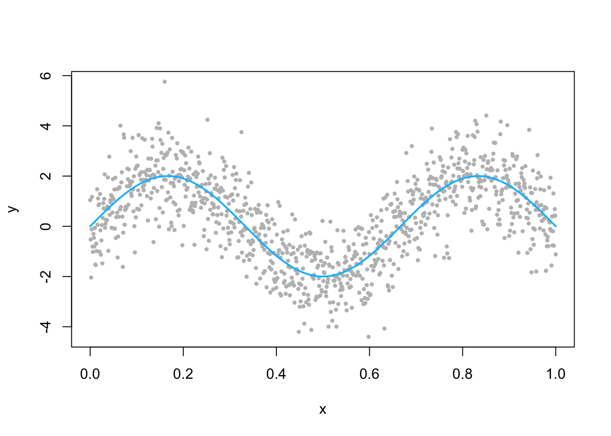
We can see that the fitted model progressively approximates the true function.
# fit regression boosting (Using a large shrinkage here to
# visualize stagewise fits; in practice use 0.1 or
# smaller.)
gbm.fit <- gbm(y ~ x, data = data.frame(x, y), distribution = "gaussian",
n.trees = 300, shrinkage = 0.5, bag.fraction = 0.8)
# plot the fitted regression function at several iterations
par(mfrow = c(2, 3))
size <- c(1, 5, 10, 50, 100, 300)
for (i in 1:6) {
par(mar = c(2, 2, 3, 1))
plot(x, y, pch = 19, ylab = "y", col = "gray", cex = 0.5)
lines(x, fx(x), lwd = 2, col = "deepskyblue")
# additive score F(x)
Fx <- predict(gbm.fit, n.trees = size[i])
lines(x, Fx, lwd = 3, col = "darkorange")
title(paste("# of Iterations = ", size[i]))
}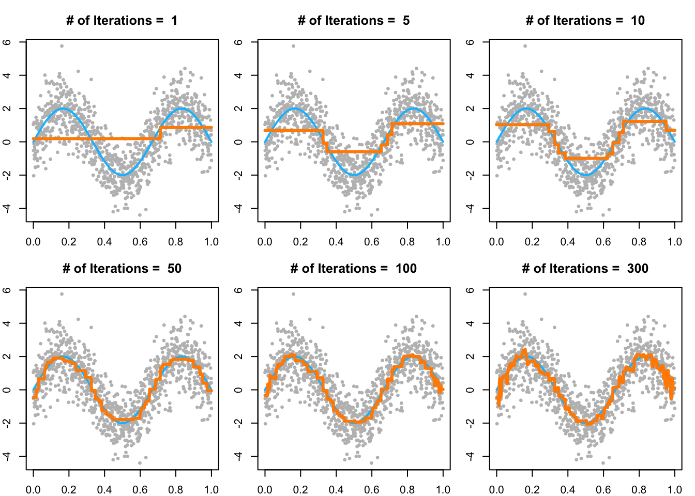
xgboost
xgboost (Chen and Guestrin 2016) is a popular and efficient implementation of gradient boosting that supports various loss functions and regularization techniques. It is widely used in machine learning competitions and real-world applications due to its speed and performance.
set.seed(2025)
n <- 2000
p <- 15
X <- matrix(rnorm(n*p), n, p)
f_true <- function(x) 2*sin(x[,1]) + 0.5*x[,2]^2 - 1.5*(x[,3]>0)
y <- f_true(X) + rnorm(n, sd = 1)
idx <- sample.int(n, floor(0.7*n))
dtrain <- xgboost::xgb.DMatrix(X[idx,], label = y[idx])
dvalid <- xgboost::xgb.DMatrix(X[-idx,], label = y[-idx])
params <- list(
objective = "reg:squarederror",
eval_metric = "rmse",
eta = 0.05, # shrinkage
max_depth = 4, # tree depth
subsample = 0.8, # row subsampling
colsample_bytree = 0.8, # column subsampling
min_child_weight = 5, # node min hessian-weighted size
lambda = 1.0, # L2 on leaf weights
alpha = 0 # L1 on leaf weights (optional)
)
watch <- list(train = dtrain, valid = dvalid)
fit <- xgboost::xgb.train(
params = params,
data = dtrain,
nrounds = 3000,
watchlist = watch,
early_stopping_rounds = 50,
verbose = 0
)
cat("Best iteration:", fit$best_iteration,
" Valid RMSE:", fit$best_score, "\n")## Best iteration: 114 Valid RMSE: 1.089309 # Feature importance (gain-based)
imp <- xgboost::xgb.importance(model = fit, feature_names = paste0("x",1:p))
head(imp, 8)## Feature Gain Cover Frequency
## <char> <num> <num> <num>
## 1: x1 0.52496002 0.22033565 0.14871256
## 2: x2 0.18529614 0.25100189 0.21229637
## 3: x3 0.16868985 0.10401314 0.08145034
## 4: x11 0.01362980 0.04472336 0.05675250
## 5: x14 0.01337181 0.03781700 0.06043090
## 6: x9 0.01250684 0.04609835 0.05570152
## 7: x4 0.01166632 0.04436425 0.05359958
## 8: x15 0.01069085 0.02917928 0.04046243 # Predictions and validation RMSE
pred <- predict(fit, dvalid)
rmse <- sqrt(mean((pred - y[-idx])^2))
rmse## [1] 1.089309